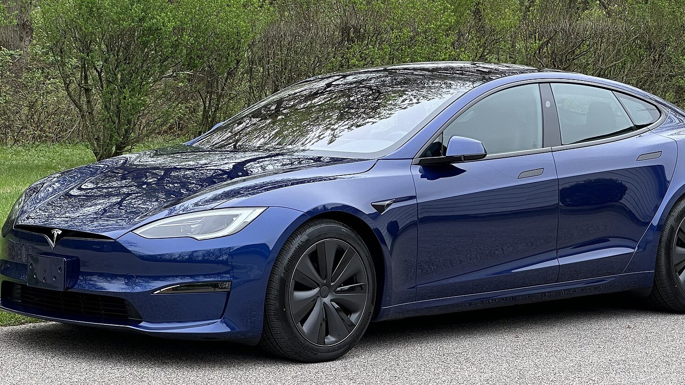

Flagship sedan · Review
Model S

Promo clip
Verdict
Buy if range, pace, and the yoke-era cabin are the point — not if you need a hatch for life admin.
Buy if
High-mileage motorway drivers and people who want the flagship without the SUV silhouette.
Skip if
Skip if you need third-row seats, a tall cargo opening, or the lowest possible entry price.
The pitch
Model S is where Tesla still flexes: Plaid when you want theatre, Long Range when you want to erase fuel stops. The yoke polarises. The silence does not.
On the road
This is the one that still feels unfair on a German Autobahn fantasy and useful on a real Dublin–Cork run. Suspension and aero do more for you than another screen widget.
Europe & Ireland
A big sedan in a country of tight estates. Parking sensors and cameras earn their keep. Charging is fine; the constraint is geometry, not electrons.
Software & FSD
Same Autopilot hardware story as the volume cars, with a cabin that makes long supervised stints less tiring. Until Ireland recognises FSD Supervised, you are buying the car and waiting on the map.